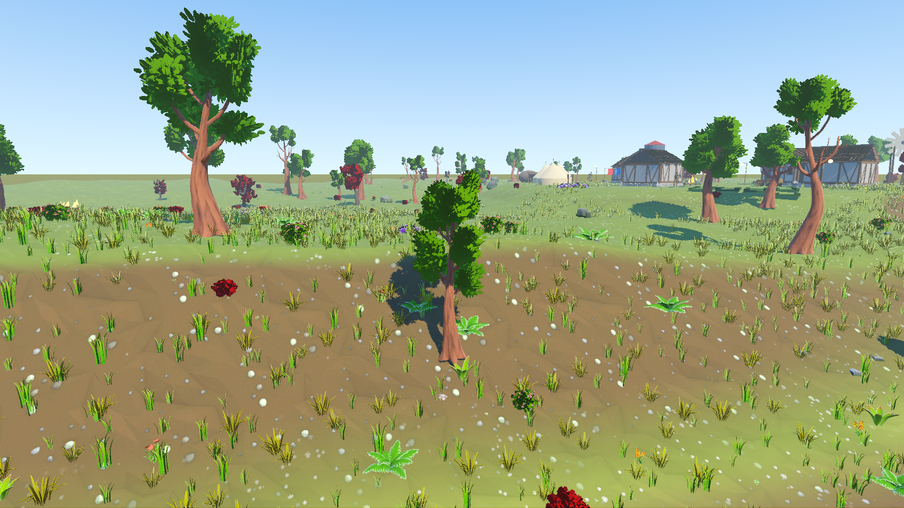
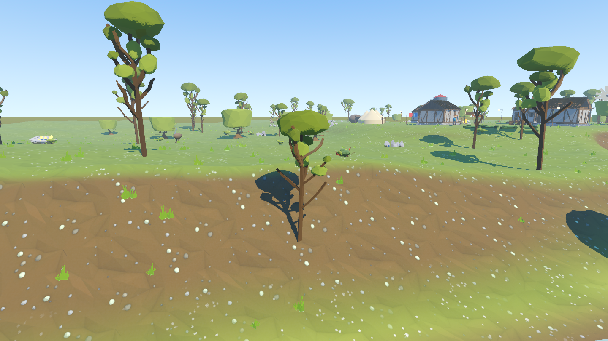
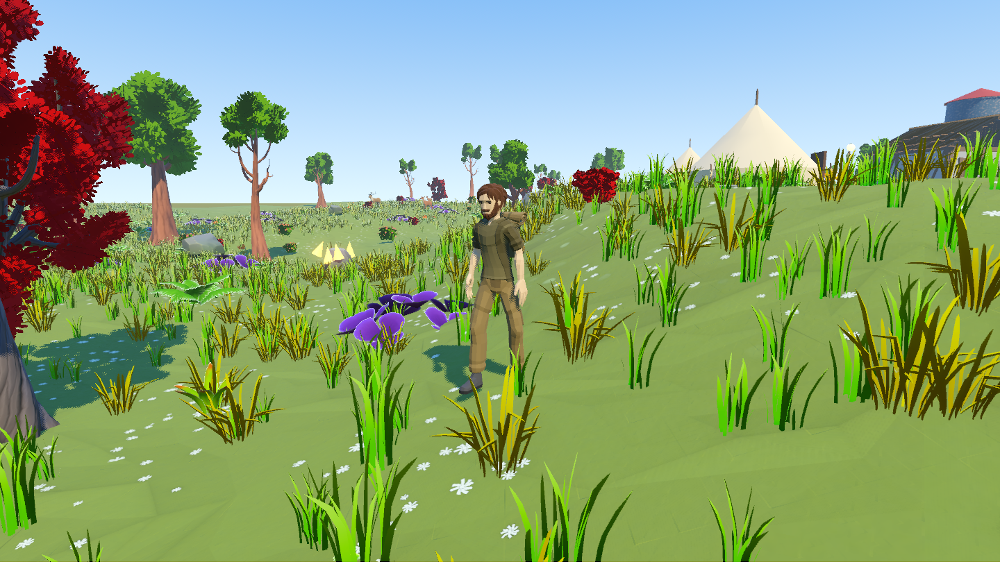
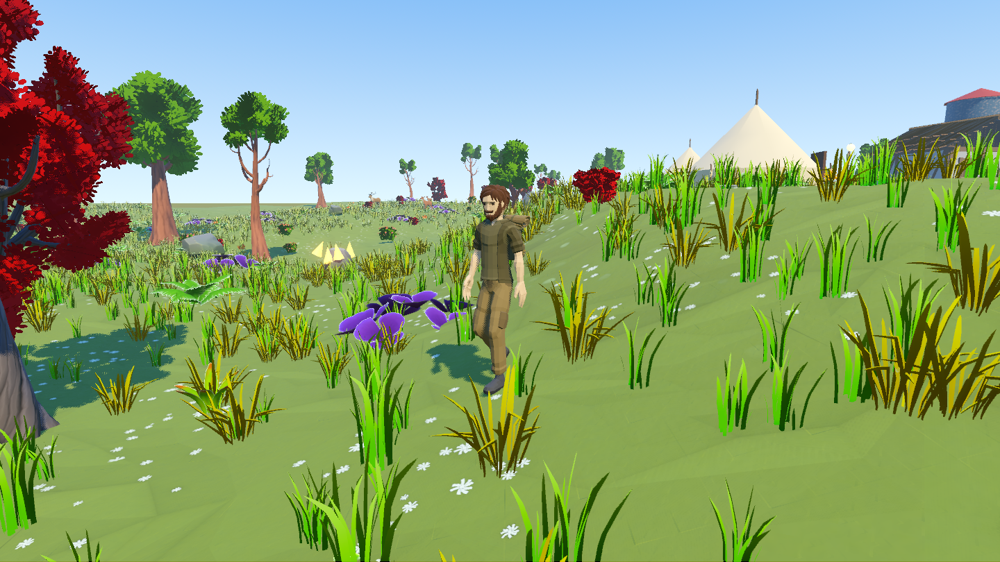
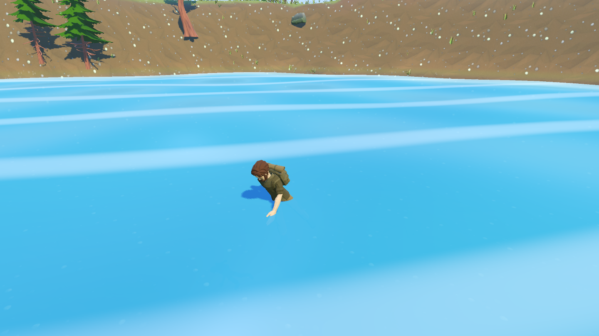
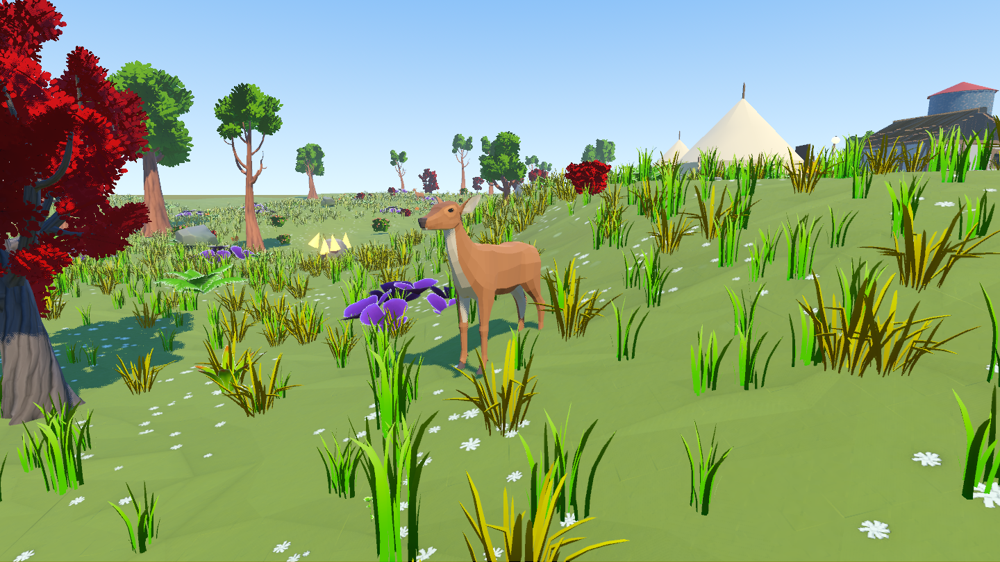
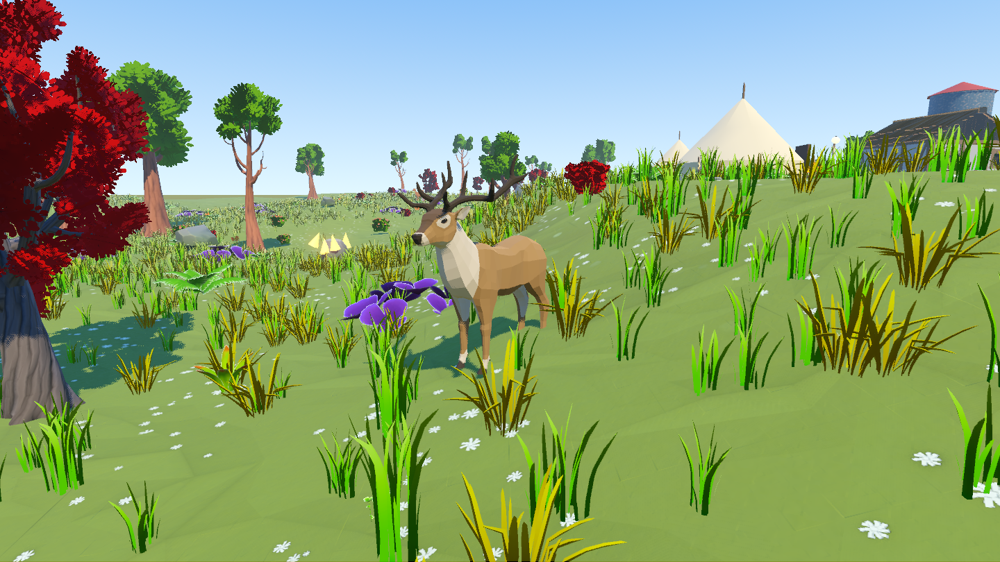
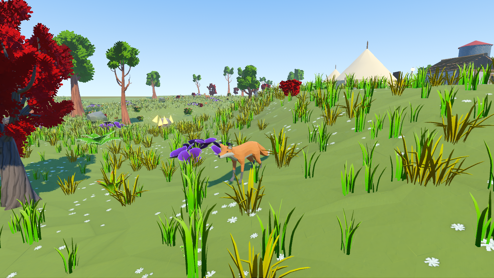
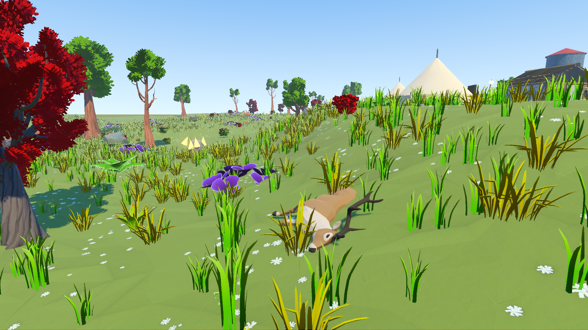
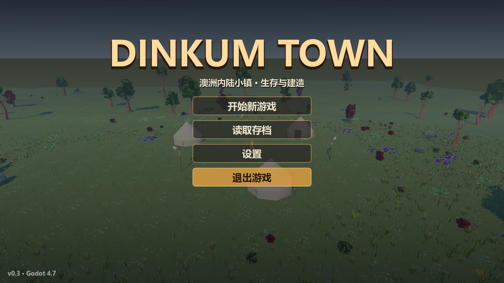

DinkumTown3D · Godot 4.7.2 · 2026-10-05
新自然环境、冒险者与野生动物
树木、灌木、草丛、岩石接入 Quaternius 自然包，新增密集草甸、花、蕨、三叶草和蘑菇。人物改为带背包的冒险者，野生动物改为鹿、雄鹿、狐狸。重启游戏即可看到，新增美术随源码交付。
固定种子 20260921。原地被有效实例 1,253，总计 38,404；实例包括草、花、蕨、灌木和碎石，不是草叶数量。原有191个采集点位置与存档身份保持一致。
同机位前后对比


上一版本轮替换两组照片使用相同种子、机位和日照。镇中心、农田和连接通道预留空间，新增地被不会增加阻挡碰撞。28米分块、65米可见范围控制绘制开销。
人物和动物已接入骨骼动画






查看动物死亡姿态

三种动物合计15只，按原有槽位顺序接入，旧存档血量和死亡状态继续有效。动物保留游走、逃跑、受伤、掉落和重生，使用走路、奔跑、受伤、死亡动画。
范围与来源
| 部分 | 本轮结果 | 来源 |
|---|---|---|
| 自然环境 | 普通树、扭曲树、灌木、草、岩石替换；湖岸原棕榈点位换松树；树桩保留尺寸，换枯树树皮和法线。花、蕨、三叶草、蘑菇、碎石增加地被层次。 | Stylized Nature MegaKit |
| 人物 | Adventurer，24个动画。原有胶囊碰撞、移动、跳跃、游泳和战斗继续由游戏控制。 | Ultimate Modular Men |
| 动物 | Deer、Stag、Fox，替换原袋鼠与鸸鹋。用户已授权扩大到商店之外并更换种类。 | Ultimate Animated Animals |
| 建筑等 | 建筑、家具、道具、地表沿用上一轮 EmacE 替换。作物、水域与 UI 保留现有实现。 | 上一轮验收 |
三套新美术均为CC0。免费自然包是68个模型，完整版宣传的116个模型不包含在免费包里；包中没有房屋、独立地形纹理、人物或动物。全部68个场景可用，游戏按用途选择变体；未放置的花瓣与铺路石保留在资产目录。
验证证据
| 新增行为 | nature_check：181项通过。真实渲染后端逐一检查37,151个实例，贴地、水域、农田和通道 bad=0；同种子指纹相同，换种子改变；真实骨骼动作、死亡和重生通过。 |
| 旧地图 | 191个采集点的类型、数量和位置 SHA-256 与前版完全相同，装饰地被不参与旧资源编号。 |
| 回归 | combat_check 102、water_check 38、physics_check 23、ui_check 1907项全绿；e2e、interior_check均 fails=0；上轮素材验收34和90项通过，关闭EmacE时40项回退验收通过。 |
| 触控 | 1440×810、1280×720、1920×1080、2560×1440、720×1280、810×1440、1080×1920、1440×2560全部 bad=0。 |
| 资产 | 共享纹理最大1024像素，树皮保留法线，叶片 alpha 裁切和风动。新增美术约28.1 MiB，127个资源依赖全部位于项目内，没有下载临时路径或 addons。 |
| 渲染采样 | RTX 5060 Laptop，1440×810，固定截图场景（人物/动物暂停、HUD隐藏）预热后采样120帧：帧间隔中位数5.54ms、P95 6.47ms。该机位577次绘制、约277万图元。 |
帧时间只代表本机与这个静态机位，未测手机。部分 headless 回归退出时仍有 ObjectDB 泄漏提示，本轮未消除；断言全部通过，没有脚本错误。MultiMesh几何验收使用窗口模式，headless 的 Dummy RenderingServer 不能读回真实实例变换。
主菜单也使用新自然环境

使用和复现
新增素材已放入 assets/ 并随 Git 同步。上一轮 EmacE 的许可仍要求本地安装；它不影响本轮CC0人物、动物和自然包的交付。素材来源、转换方法和验收命令见 接入说明。
# Godot窗口模式验收 Godot --path . res://tools/nature_check.tscn --quit-after 3000 # 对照上一版外观 Godot --path . -- --no-nature --no-characters